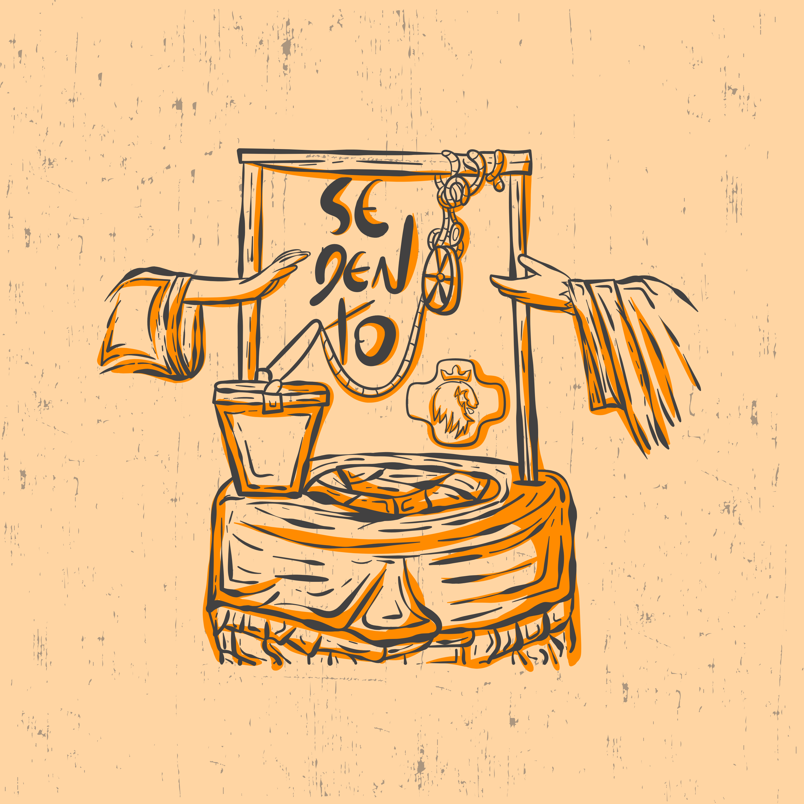

NOSSA TRAJETÓRIA
FRUTOS DA NOSSA MISSÃO
Cada número representa uma alma tocada pela sede de Deus. Não estamos começando agora, estamos expandindo um chamado que já gera frutos.

2024
SEDENTO
20K+
STREAMS NAS PLATAFORMAS

2025
TU ÉS A NOIVA
10K+
ALMAS ALCANÇADAS
COMO VOCÊ PODE AJUDAR?
Passe o mouse (ou toque) em uma modalidade para apoiar:
AMIGO DA MISSÃO
Qualquer Valor
Sua doação ajuda nos custos de produção e na manutenção diária da nossa missão evangelizadora.
MAIS ESCOLHIDO
PATROCINADOR
A partir de R$ 300
- Seu nome nos créditos oficiais
- Agradecimento nas Redes Sociais
- Acesso aos bastidores
EMPRESA MASTER
Cota Corporativa
Sua marca associada a um projeto de alto impacto. Logo no clipe e materiais de divulgação.